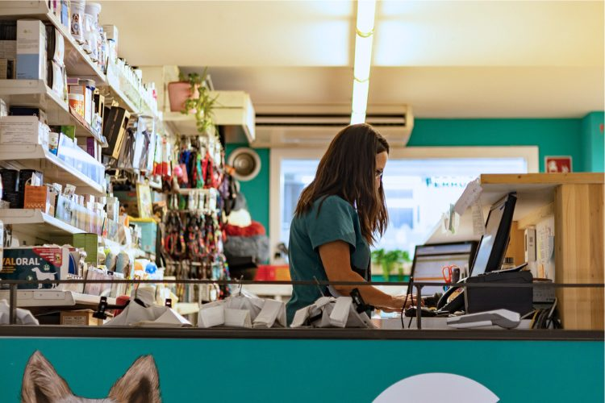
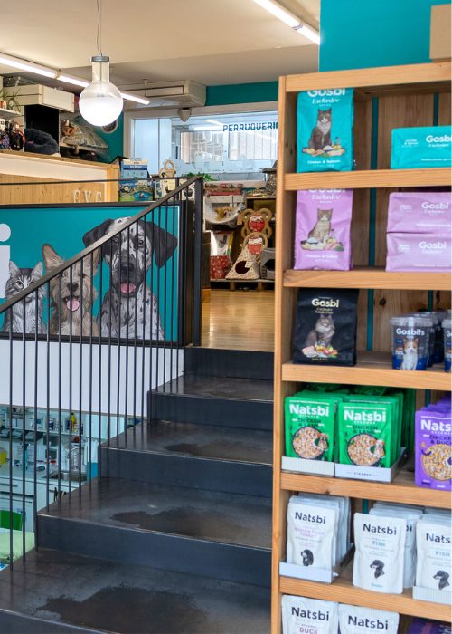
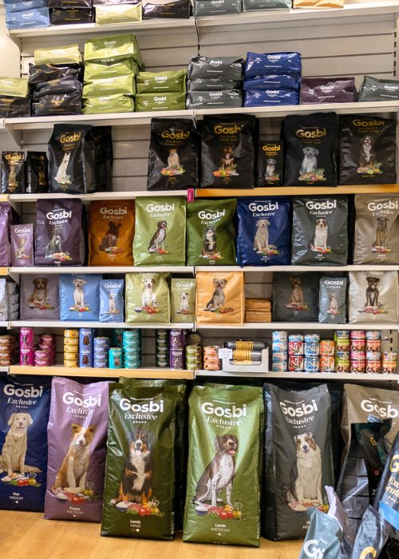
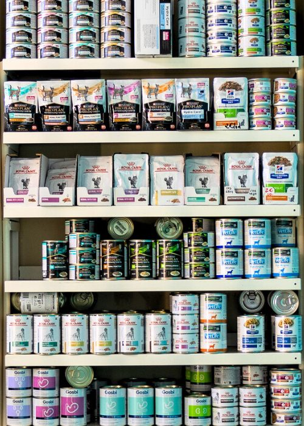
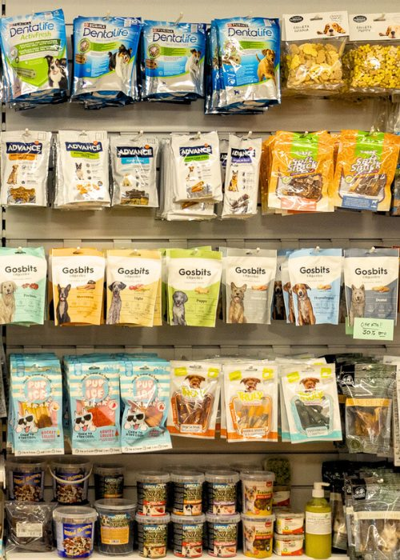
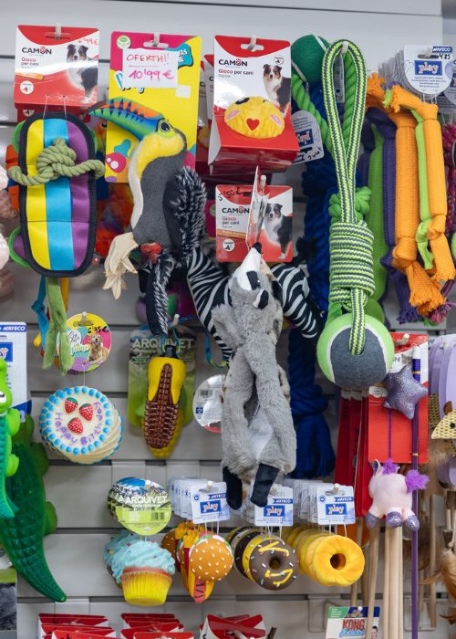
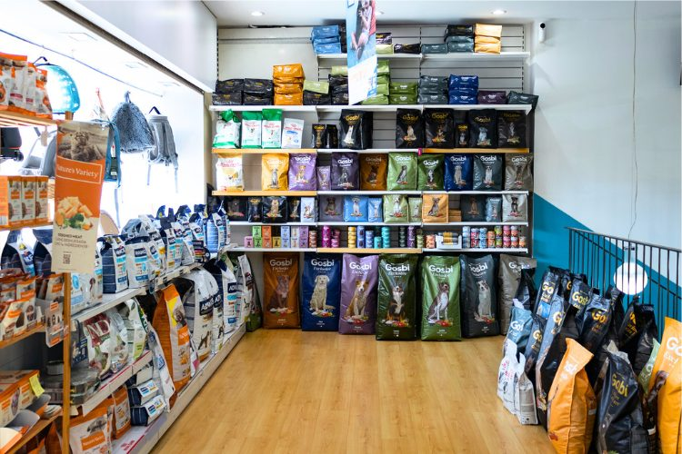
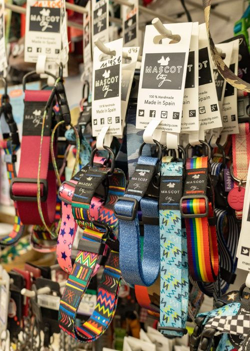
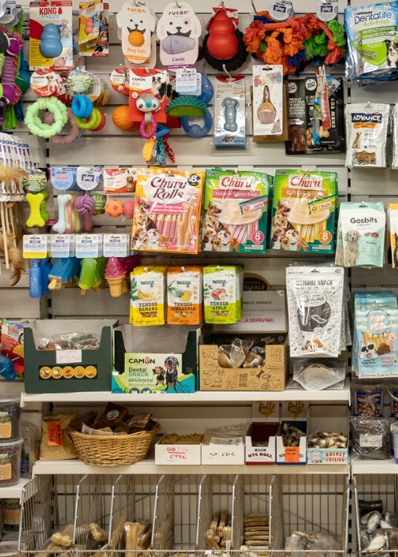

Visita nuestra tienda
Descubre una amplia selección de artículos para cuidar, consentir y mimar a tu mascota: nutrición, higiene, estética, accesorios y juegos.
Todo lo que tu mascota necesita, en un solo lugar
Compartir tu vida con una mascota es una experiencia única y llena de alegría. Para que esa aventura sea aún más especial, es fundamental conocer y atender todas sus necesidades: nutrición, higiene, estética, accesorios y juegos, esenciales para su bienestar.
En nuestra tienda encontrarás una amplia gama de productos y complementos diseñados para cubrir cada uno de estos aspectos, con una atención personalizada, actualizada y de confianza.
Visítanos

Alimentación premium para cada etapa de su vida
Trabajamos con las mejores marcas para cubrir las necesidades nutricionales de tu mascota, desde cachorros hasta edades avanzadas, incluyendo dietas específicas.
- Marcas veterinarias de confianza
- Dietas por edad y necesidad
- Asesoramiento personalizado
Nuestras categorías de producto
Alimento Seco
Pienso para perro y gato
Alimento Húmedo
Comida enlatada
Snacks
Chuches para perros
Accesorios
Juguetes para mascotasUn rincón pensado para consentir a tu mascota



¿Buscas un producto en concreto?
Consúltanos disponibilidad y te lo reservamos.